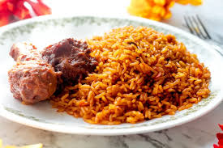

Description
A staple in Nigerian homes. This specific recipe is easy to follow at home. It should and would end the argument of which is better?
Nigerian or Ghanian Rice. Ps. It's Nigerian Jollof Rice for the win.
Ingridients
- Rice
- Meat
- Fresh Tomatos
- Fresh peppers
- Seasoning Cubes
- Sliced Onions
- Vegetable Oil
- Salt
- Cloves
- Ginger
Steps
- Precook meat with the listed spices
- Peel of the outer back of the ginger/garlic, pound or grind.
- Parboil rice, wash and set aside in a plastic bowl.
- Seperate meat from stock once done cooking
- Fry tomatoes up till it starts burning
- Add chicken stock, blended ginger(seasoning) to fried tomato
- Add water to tomato mixture
- Add parboiled rice
- Stir rice occasionaly until cooked
- Serve with meat
- Enjoy Nigerian Jollof Rice